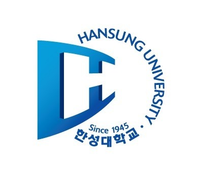
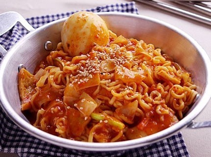
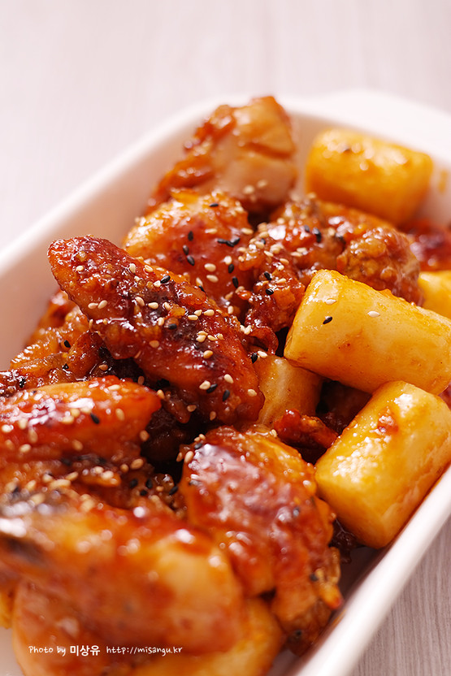
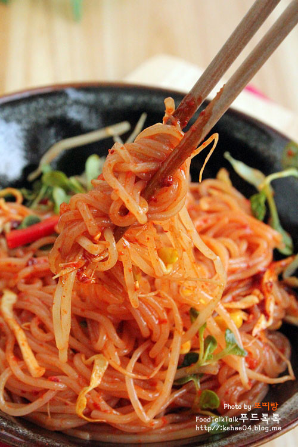

소개
이름: 이우연
나이: 21세
현재
한성대학교 IT응용시스템학과 1학년에 재학중.

~13세
2001.03-서대문구 북아현동에 위치한 청산유치원에 입학.
유치원 내에서 2년동안 각종 기념일에 피아노 반주자로 활동함.
2003년
2003.03-서대문구 북아현동에 위치한 추계초등학교에 입학.
2003.03~08-1학년 1학기 학급반장을 맡음.
2003.05-교내 바른글씨쓰기 대회에서 금상수상.
2003.05-교내 착한어린이상 수상.
2003.06-교내 그림그리기대회에서 금상수상.
2003.09-교내 과학상상그리기대회에서 금상수상.
2004년
2004.03~08-2학년 1학기 학급반장을 맡음.
2004.05-교내 바른글씨쓰기 대회에서 은상수상.
2004.05-교내 착한어린이상 수상.
2004.06-교내 그림그리기대회에서 금상수상.
2004.07-교내 영어말하기대회에서 은상수상.
2004.09-교내 과학상상그리기대회에서 은상수상
2004.11-교내 음악대회에서 피아노로 은상수상
2005년
2005.06-교내 글짓기대회에서 금상수상.
2005.06-교내 수학경시대회에서 금상수상.
2005.07-1학기성적우수상 수상.
2005.07-교내 독서감상문대회에서 금상수상.
2005.09-교내 포스터그리기대회에서 동상수상.
2005.09~12-3학년 2학기 학급부회장을 맡음.
2005.10-교내영재학생으로 선발되 영재시험을 준비함.
2005.12-2학기성적우수상 수상.
2006년
2006.03-08-4학년 1학기 학급부회장을 맡음.
2006.06-교내 글짓기대회에서 은상수상.
2006.07-1학기성적우수상 수상.
2006.09-서대문구 홍은동에 위치한 서울홍연초등학교로 전학.
2006.12-2학기 성적우수상 수상.
2007년
2007.03~08-교내 영재우수반에서 활동함.
2007.09-12-5학년 2학기 학급부회장을 맡음.
2007.10-교내 수학경시대회에서 동상수상.
2008년
2008.04-교내 글짓기대회에서 은상수상.
2008.09~12-6학년 2학기 학급부반장을 맡음.
2008.10-전국 금연글짓기대회에서 동상수상.
2009.02-서울홍연초등학교 졸업.
14~16세
2009년
2009.03-서대문구 연희동에 위치한 서연중학교에 입학.
2009.03~12-1년동안 학급에서 반주자로 활동함.
2009.04-교내 백일장에서 운문 부문 금상수상.
2009/09~12-1학년 2학기 학급부회장을 맡음.
2009.10-교내 글쓰기대회에서 최우수상 수상.
2010년
2010.07-음악과목 성적우수상 수상.
2010.07-학급내 바른말쓰기상 수상.
2010.12-음악과목 성적우수상 수상.
2010.12-학급내 효도상 수상.
2011년
2011.07-수학과목 성적우수상 수상.
2011.09-교내 영어듣기경시대회에서 우수상 수상.
2011.10-교내 글쓰기대회에서 우수상 수상.
2012.02-서연중학교 졸업.
17~19세
2012년
2012.03-서대문구 북아현동에 위치한 서울중앙여자고등학교에 입학.
2012.03~12-1년동안 학급에서 반주자로 활동.
2012.04-교내 독서감상문 쓰기대회 3등.
2012.12-음악과목 성적우수상 수상.
2012.12-야간자율학습상 수상.
2013년
2013.02-1년 개근상 수상.
2013.07-수학과목 성적우수상 수상.
2013.09-학급내 고운말 학생상, 모범학생상 수상.
2014년
2014.02-1년 개근상 수상.
2014.07-교내 과학경시대회 화학과목 은상수상.
2015.02-3년 개근상 수상.
2015.02-서울중앙여자고등학교 졸업.
취미
음악 감상하기, 거리 사진찍기, 노래부르기, 편지쓰기.
좋아하는 음식



시간표
| 주간 |
월 |
화 |
수 |
목 |
금 |
1교시
09:00~09:50 |
|
웹프로그래밍 |
|
영어커뮤니케이션 |
|
2교시
10:00~10:50 |
|
영어커뮤니케이션 |
|
소프트웨어의 이해 |
3교시
11:00~11:50 |
|
일반물리1 |
|
4교시
12:00~12:50 |
|
|
웹프로그래밍 |
|
5교시
13:00~13:50 |
|
|
사고와 표현 |
|
웹프로그래밍 튜터링 |
6교시
14:00~14:50 |
|
|
|
|
7교시
15:00~15:50 |
C프로그래밍 |
C프로그래밍 튜터링 |
|
C프로그래밍 튜터링 |
|
8교시
16:00~16:50 |
기초공학수학 |
대학과 사회의 이해 |
C프로그래밍 |
brain storming physics |
|
9교시
17:00~17:50 |
|
|
댓글남기기